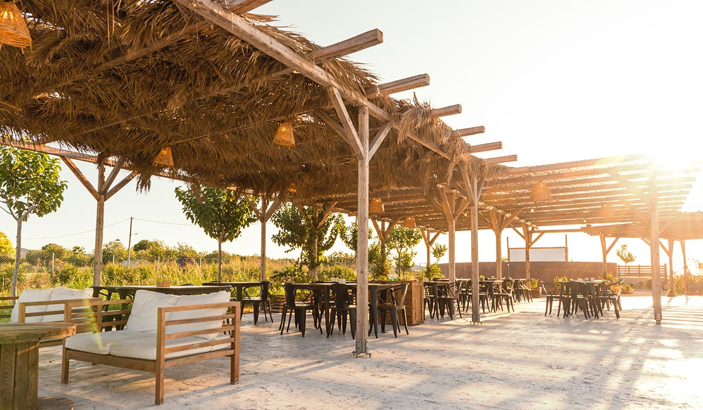
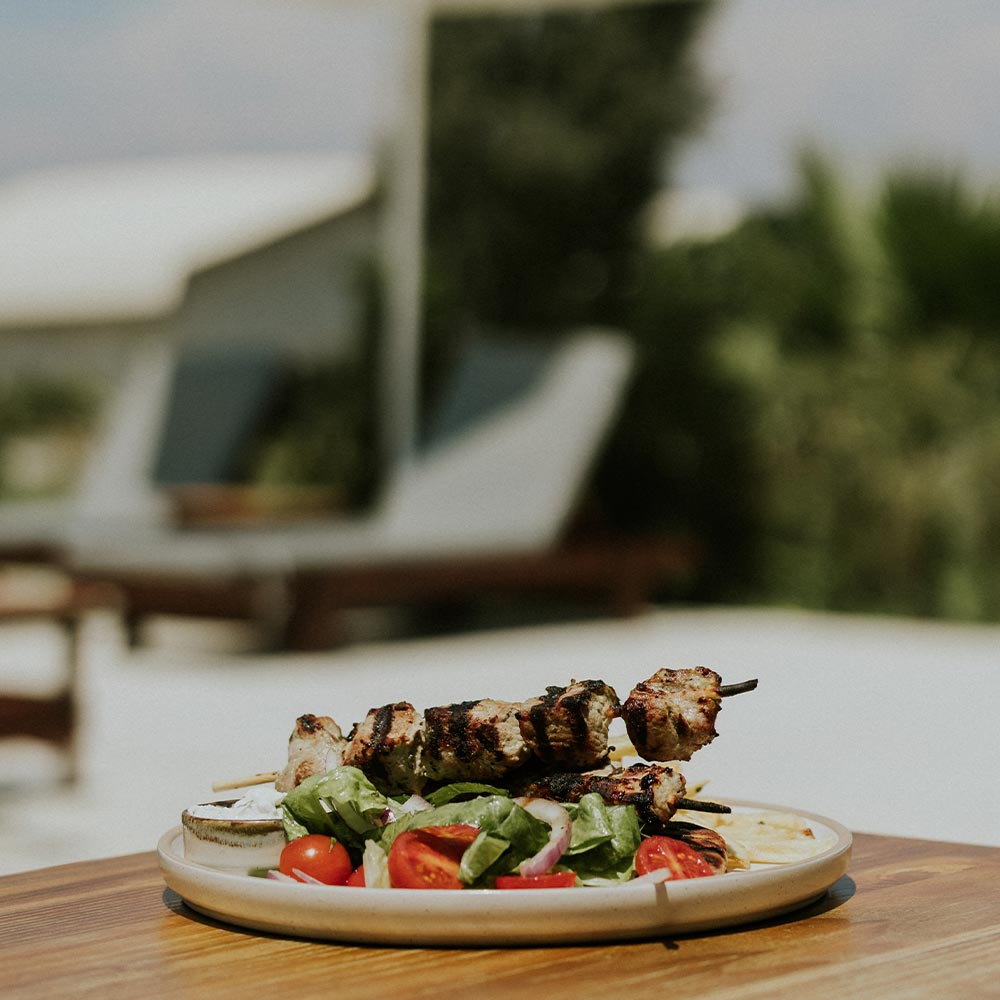
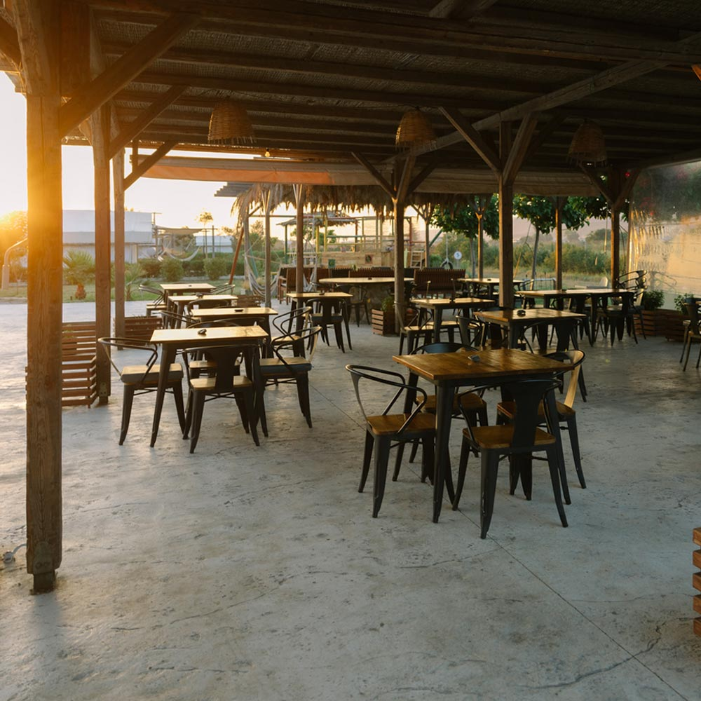
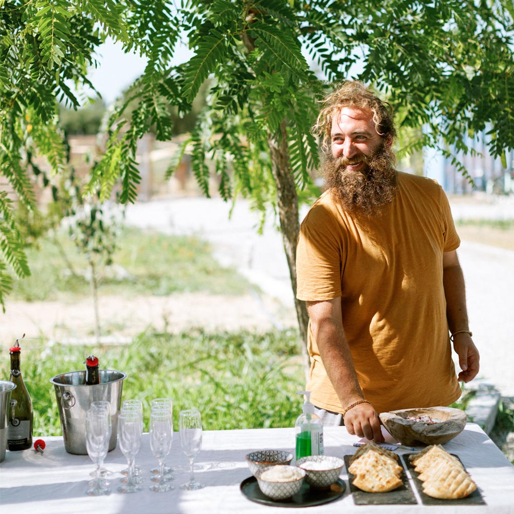

At the Taverna
Dinner service 18:30 – 22:00 with dishes from the island and the family's kitchen.

Nestled amidst lush gardens and just a short stroll from the beach, the Taverna and Bar serve a delightful mix of traditional Greek cuisine and creative, locally sourced dishes, all crafted with fresh, high-quality ingredients.
With an impressive selection of Greek boutique beers and local wines, it is the ideal spot to unwind after a day of island exploration.
| Breakfast | 07:30 – 10:00 |
| Bar | 10:00 – 23:00 |
| Restaurant | 12:30 – 16:00 & 18:30 – 22:00 |


Breakfast is included in your stay. An abundant spread of freshly baked pastries and breads, hot options such as eggs and bacon, homemade granola, creamy Greek yoghurt and vibrant, freshly cut seasonal fruit — served by the team every morning.
Included in your stay
Greek nights, wine tastings and live music through the season — ask at the bar or look at the weekly programme in the Journal.
Dinner service 18:30 – 22:00 with dishes from the island and the family's kitchen.

Greek boutique beers and local wines until 23:00, by the pool.
Most guests charge meals and drinks to their room and settle at check-out. See how that works.